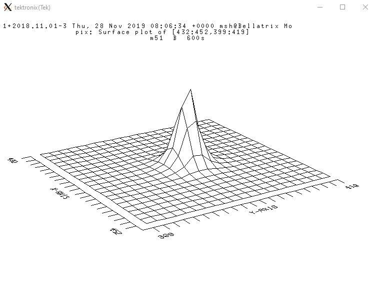

Python Işıkölçüm¶
Işıkölçüm (photometry) bir kaynağın zamana bağlı parlaklığındaki değişimin incelenmesidir.
Yukarıdaki tanıma göre, ışıkölçüm yapabilmek için, bir kaynağın parlaklığına ve ölçümün yapıldığı zamana ihtiyacımız olaraktır.
Daha önce zaman kavramları ve FITS dosyaları üzerinde konuştuk.
Fiziksel bir olayın geçekleşmesini anlamak için, olayın gerçekleşme zamanını bilmek önemlidir. Dolayısıyla bir FITS dosyası oluşturulurken başlığında FITS dosyasının kaydetmeye çalıştığı olayın (bizim durumumuzda gök cisminin parlaklığı) zamanı da FITS’in başlığına yazılır. Söz konusu zaman türü değişiklik gösterebilir (JD, UTC, Yerel gibi). Fakat zamanın kaydedildiğine emin olabiliriz.
Zaman¶
Daha önceli örneğimizde bir FITS dosyasındaki başlıkların listesini edinmiştik:
from astropy.io import fits as fts
header = fts.getheader(r"[Dosya Yolu]")
print([card[0] for card in header.cards if card[0] != ""])
Çıktı:
['SIMPLE', 'BITPIX', 'NAXIS', 'NAXIS1', 'NAXIS2', 'EXTEND', 'ORIGIN', 'DATE', 'IRAF-TLM', 'OBJECT', 'IRAF-MAX', 'IRAF-MIN', 'CCDPICNO', 'ITIME', 'TTIME', 'OTIME', 'DATA-TYP', 'DATE-OBS', 'RA', 'DEC', 'EPOCH', 'ZD', 'UT', 'ST', 'CAM-ID', 'CAM-TEMP', 'DEW-TEMP', 'F1POS', 'F2POS', 'TVFILT', 'CMP-LAMP', 'TILT-POS', 'BIAS-PIX', 'BI-FLAG', 'BP-FLAG', 'CR-FLAG', 'DK-FLAG', 'FR-FLAG', 'FR-SCALE', 'TRIM', 'BT-FLAG', 'FF-FLAG', 'CCDPROC', 'AIRMASS', 'HISTORY', 'HISTORY', 'HISTORY', 'HISTORY']
Bu listeye bakacak olursak Date adlı bir anahtar/Kart görürüz. Bu anahtardaki değer verinin alındığı zamanı gösterecektir.
from astropy.io import fits as fts
header = fts.getheader(r"C:\Users\mshem\Desktop\pix.fits")
print(header["Date"])
Çıktı:
2021-08-16T08:23:55
Dolayısıyla zaman bilgisini başlıktan alabileceğimizi öğrendik.
Parlaklık¶
Daha önce bir FITS verisinin bir matris olduğunu belirtmiştik. Mu matristeki her bir eleman sayısal görüntüdeki bir piksele karşılık geldiğini de biliyoruz.
Kaynak profilleri¶
Bir kaynağın görüntü üzerinde yalnızca bir pikselde olması beklenemez. Bunun nedeni ise çoğunlukla atmosferdir. Atmosfer dışında bir de yıldızlar arası ortam etkin olacaktır.
Bir kaynağın ışığı atmosferden geçtikten sonra dedektör düzlemine düşer. Söz konusu kaynağın dedektör üzerinde oluşturduğu şekil ise Point Spread Function (PSF, Nokta Dağılım Fonksiyonu) ile ifade edilebilir.

Noıkta Dağılımı
PSF bir noktanın görüntü üzerinde dağıldığı alanı matematiksel olarak ifade eder. Bu ise bize kaynağımızın akısının hangi piksellerde olduğunu gösterir.
Kaynağın merkezini ve ne kadarlık alana dağıldığını bilirsek, söz konusu kaynağın akısın hesaplayabiliriz.
Note
Bu aşamada açıklık fotometrisi yaptıpımız için PSF’in yalnızca Yarı Yükseklikteki Tam Genişlik (FWHM, Full Width at Half Maximum) değerini bilmemiz yeterli olacaktır.
Bir nokta dağılımın verisinin %90’ından fazlası FWHM’un 2.5 katı genişliğe dağılacaktır. Dolayısyıla açıklık fotometrisi yaparken seçeceğimizn açıklık FWHM’un 2.5 katı kadar olmalıdır.
Işıkölçüm¶
Bir kaynağın konumunu ve FWHM değerlerini bildiğimize göre, söz konusu kaynağın akısını elde etmek için, kaynağın bulunduğu konumda FWHM’un 2.5 katı kadar bölgede kalan piksellerin sayım değerlerini toplamamız gerek.
Göylece toplam sayım
Note
\(sum\) toplam sayım, \(p_n\) n. piksel ve \(a\) acıklık altında kalan piksel olmak üzere
olarak ifade edilir.
Akıyı birim zamanda, birim katı açıda, birim alana düşen toplam enerji miktarı olarak tanımlamıştık.
Sonuç olarak akı
Note
\(f\) akı, \(sum\) toplam sayım, \(exp\_time\) görüntünün poz süresi ve \(A\) açıklığın alanı (piksel sayısı) olmak üzere
olarak hesaplanır.
Işıkölçüm sonucunun zamana bağlı akı olarak verilmesi anlamlı olup bazı uygulamalarda tercih edilir. Bizim çalışmamızda ise ışıkölçüm zamana bağlı parlaklık olarak verilecektir. Dolayısıyla akı değerini parlaklığa dönüştürmek gerek.
Parlaklık ise
Note
\(mag\) parlaklık ve \(f\) akı olmak üzere
olarak hesaplanır.
Bu aşamada bir görüntü üzerindeki bir kaynak için zaman ve parlaklık değeri hesaplanmış oldu.
Python’ın gücünden destek alarak tüm görüntüler için tüm kaynakların zamana bağlı parlaklığı hesaplanabilir.